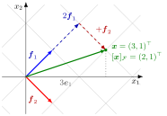

Let V be an n-dimensional real vector space with ordered basesB=(b1,…,bn) and C=(c1,…,cn). The coordinate vector [x]B∈Rn lists the unique scalars with x=i∑([x]B)ibi.
The change-of-basis matrix from B to C is the n×n matrix
PC←B=([b1]C⋯[bn]C),[x]C=PC←B[x]B for all x∈V.
In Rn with C the standard basis, write B=(b1⋯bn). Then x=B[x]B and [x]B=B−1x.
The vector x does not move; only its description changes. The matrix PC←B translates "B-language" into "C-language", and its columns are the old basis vectors written in the new coordinates.

The figure shows the first example. The green arrow x=(3,1)T is one fixed vector. Along the standard axes it is 3e1+e2; along the tilted grid of B it is 2b1+b2. Changing basis only changes which grid the vector is read on, so its coordinates change from (3,1)T to [x]B=B−1x=(2,1)T.
The direction of the arrow is the usual source of errors. The matrix whose columns are the new basis vectors in standard coordinates converts new coordinates into standard ones, so going from standard to new coordinates needs its inverse. Texts differ in which of the two they call "the" transition matrix; the course's convention has not been checked against the slides.
PC←B is invertible and PC←B−1=PB←C; it is the matrix [I]C,B of the identity map. Conversely, every invertible n×n matrix is the change-of-basis matrix from the basis formed by its columns to the standard basis.
For a linear map T:V→W with bases changed in both spaces, [T]C′,B′=PC′←C[T]C,BPB←B′, where B,B′ are bases of V, C,C′ are bases of W, and [T]C,B maps B-coordinates to C-coordinates.
If B is orthonormal in Rn, then B−1=BT and ([x]B)i=biTx.
Aliases: basis transformation, change of coordinates, change-of-basis matrix, change-of-coordinates matrix, transition matrix between bases
Keywords: coordinate vector, [x]B, P[T]_C S
Symbols: element of, real numbers, sum
}, B^{-1}x, [T]_B = S^{-1
Last updated: 13 October 2026 07:32
Change of BasisSimilarity TransformationBasisCoordinateInverse and Singular MatricesMatrix Representation of a Linear MapGram-Schmidt AlgorithmDiagonalizationEigenbasis